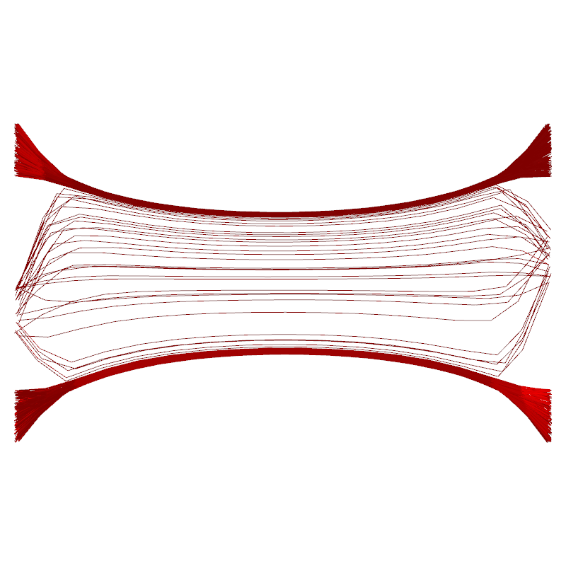
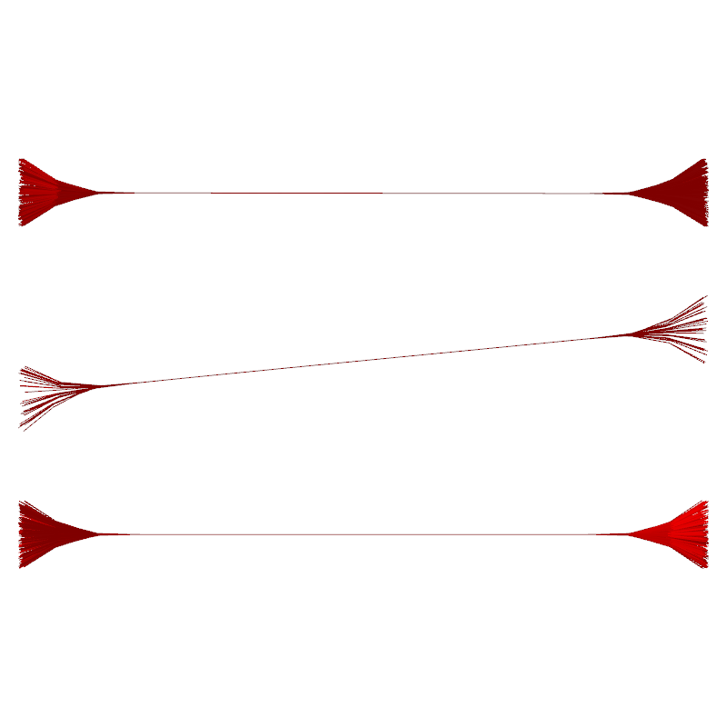
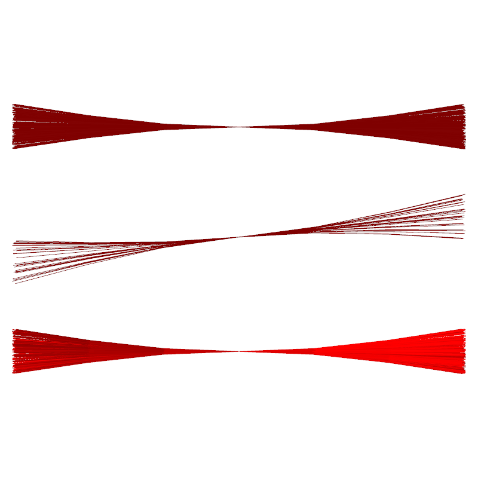

Bundling example
- Download and install Qt-Creator.
- Load the project files (bundler.pro and fibviewer.pro) in Qt-Creator, compile both projects in the build menu.
- Put the resulting executables (bundler and fibviewer) in your path
- In a new folder, create artificial example data:
fibviewer artificial -writefib
As a result, the file "artificial.fib" is created. You can look at it with:
fibviewer artificial.fib

- Bundle it with the default parameters:
bundler -fib artificial.fib
- Look at it:
fibviewer artificial.fib_c_thr0.8000_start_i0010_numcycles10.fib

- The middle bundle is split up in a weird way: One way around that is to increase the compatibility threshold to 0.9 from the default (0.8):
bundler -fib artificial.fib -c_thr 0.9
- Looking at it again shows that now the bundles are nicely seperated:
fibviewer artificial.fib_c_thr0.9000_start_i0010_numcycles10.fib

- In order to change the shape of the bundles to "less tight", we can decrease the number of cycles to 4 (default 10):
bundler -fib artificial.fib -c_thr 0.9 -numcycles 4
fibviewer artificial.fib_c_thr0.9000_start_i0010_numcycles04.fib
